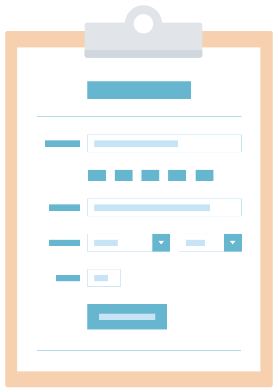

Developing a Website on NationBuilder
For Loops and Conditionals
In this installment of our NationBuilder series, we’re going over for the two primary methods for adding logic using Liquid to a NationBuilder theme: for loops and conditionals.

Conditionals
Let’s begin with a few basic if statements.
{% if user.name == 'Mika' }
Hello Mika
{% elsif user.name == 'Kygo' }
Hello Kygo
{% endif }or
{% if request.current_user.is_volunteer? == true %}
Thank you for volunteering!
{% else %}
Will you volunteer?
{% endif %}{% if request.current_user.is_volunteer? == true %}
Thank you for volunteering!
{% else %}
Will you volunteer?
{% endif %}Both of these examples use a Liquid object to determine something about the user and display different content based on that. Building on that, let’s see how to target a user’s membership type using conditionals.
For example, to make certain pages (or parts of pages) only viewable to certain membership types, first set up membership types in your nation. Next, add a member type in the NationBuilder control panel called Sustaining. Lastly, wrap your page content inside Liquid conditionals that check for membership levels or tags—or otherwise hide the content—like this:
{% if request.signup.membership_level_name contains "sustaining" %}
<!-- Paying Member Content -->
{% else %}
<!-- Non Paying Member Content -->
{% endif %}
For Loops
For loops are great for quickly targeting a group of pages or posts.
For Loop Example 1:
You could use a for loop to access a page’s children with the the page.children object.
So this would go in the parent page’s template:
{% for page in page.children %}
{{ page.slug }}
{% endfor %}And that would list the slug of each subpage.
For Loop Example 2:
Images that are uploaded to the Files section of a page (attachments) are accessible in a for loop this way:
{% for attachment in page.attachments limit: 10 %}
<img src="{{ attachment.url }}" />
{% endfor %}The above code could go in a partial named _gallery.html and if a page had {% include "gallery" %}, it would display all the images that have been uploaded to that page.
For Loop Example 3:
If you want to cycle through iterations where the tag issue is used and show the content only on the homepage, you could put this in layout.html:
{% if page.is_homepage? == true %}
{% tag "issue" with "homepage_content_block" %}
{% endif %}in _homepage_content_block.html:
{% for page in tag.most_recent_published_pages_no_pagination %}
<p>page slug: {{ page.slug }}<br></p>
<p> page name: {{ page.name }}</p>
<p> author%u2019s first name: {{ page.author.first_name }}</p>
{% endfor %}most_recent_published_pages_no_pagination will give you a list of the most recently updated 500 pages, and the tag prefix lets it access the tag_slug used in the original {% tag %} call.
For Loop Example 4: Similarly, this is a for loop that will display an attachment image within a feed of pages with a certain tag:
{% for page in tag.most_recent_published_pages limit: 3 %}
<a href="{{ page.url }}"><img src="{{ page.attachments.first.url }}" /></a>
{% endfor %}So if the code above was in a partial named _show_books.html, than this line would go in a template file:
{% raw %}{% tag "books" with "show_books" %}And that would display the first image from each of the 3 most recently published pages tagged with books.
Let’s Bring Them Together
We’ll end with a simple example of an if statement inside a for loop:
{% for child in page.children }
{% if child.type_name == 'Question' }
<li><a href="{{ child.url }}">{{ child.headline }}</a></li>
{% endif }
{% endfor }This code would iterate over every subpage for a particular page and for any whose name contained the word “Question”, that page’s headline would be displayed as a list item link to the page.
When it comes to Liquid logic, keep it simple and in separated in clean chunks. If it helps, draw or write out your process in pseudo code. Think explicitly about what you want to end with and what you’re able to target to begin with. Pretty soon, you’ll find for loops and conditionals useful thinking tools for any problem.
Images, Assets, and Subpages
In this, my fourth post on developing with NationBuilder, I’m going to cover some useful concepts and techniques for working with images and subpages. If you want to check out previous posts, there’s one on getting started, Liquid basics, and Liquid logic.

Images, Assets, and Scripts
All images or assets used for a specific page only should be uploaded to Website > Template > Files but any images or assets used for your overall theme should be uploaded to Website > Theme > Files. No path is necessary when referencing images or assets in your theme template:
<img src="myfile.jpg" />.example { background-image: url('myfile.jpg'); }Upload script files here too and then reference them at the bottom but inside the body tag in layout.html:
<script type="text/javascript" src="fancyzoom.js"></script>
</body>
</html>If you need to link to an absolute URL, upload the file, then right click on it and choose Copy Link Address. That link will look something like this:
https://nationslug.nationbuilder.com/assets/pages/1/filename.jpgIf you are referencing an image or file within a <script> tag, upload the file to Website > Theme > Files and use the following code:
{{ theme['myfile.jpg'] }}Attachments vs Meta Images
An attachment is a file that is uploaded to the files section of a page. The meta image is defined under the Social Media section of the page settings tab, and is used primarily to define a meta image for use when sharing on Facebook, Twitter, etc. A page can have only one meta image, but can have multiple attachments.
These snippets can be used to display images from a page when you don’t know the filename but know that the files will be attachments on that page, which is why they’re housed in for loops.

Subpages
When dealing with subpages, you can loop through them to display each one or elements from each one on the main parent page. You’d be accessing the page.children object by means of a for loop. So you’d place this in the parent page’s template:
{% for page in page.children %}
{{ page.slug }}
{% endfor %}The above code would list the slug of each subpage.
Subpage Example 1
You could use the {% subpage %} tag to access an attachment on another page. If the attachment is on page1 and you want to call it on page2, put this line on page2:
{% subpage "page1" with "partial_attachment_include" %}and then _partial_attachment_include.html would contain:
{% for attachment in page.attachments %}
{% if attachment.url contains "header" %}
<img src="{{ attachment.url }}">
{% endif %}
{% endfor %}In this case, page2 would see the subpage command, run page1 through the logic in the above HTML snippet, which would cycle through page1’s attachments, and only render if an attachment.url included header.
Subpage Example 2
If you have an image named header.jpg in the files section of a page with slug page_a, you could create a file named _partial_image_call.html which contained:
<img src="{{ page['header.jpg'] }}" />and that would allow you to call that image from anywhere else by putting this line on any page you wanted the image to appear:
{% subpage 'page_a' with 'partial_image_call' %}You can only use the line in that partial in conjunction with the subpage call but weirdly, the subpage tag does not require that a page be the child of another to work!
So that’s an overview on where to store images and assets on NationBuilder and how to call them up no matter what page you’re on. Check back for my next post on the People and Communication sections of the NationBuilder control panel and how they connect to your nation’s website.
Signups, Forms, and Actions

Welcome to my sixth and final post on developing websites in NationBuilder. We’ve covered getting started, using Liquid, applying logic and tags, organizing assets and pages, and communicating with your users. But today, we’re going to wrap it up with some tips and tricks around signing up members and enabling actions. That is, how do you allow your users to engage with you?
We’ll start in the NationBuilder Control Panel, where you can customize action settings for any action page type.

Action Settings
Many NationBuilder page types allow for visitors to take an action like sign a petition, make a donation, or RSVP to an event. And for each action, there are settings you can control by going to [Page name] > Settings > [Action] Settings. So for a page with page type Signup, that tab would be labeled Signup settings. This is where you can do things like automatically add tags to any person who signs up on your site.
To add or remove a tag associated with a signup form, go to: Signup settings > Radio buttons. You can allow users to select multiple tags here: Signup settings > Basics in which case the Radio buttons section will be renamed Checkboxes. For more info, check out how to create a new tag for a signup form.

Data and Forms
Very often, you want a field in your form that NationBuilder doesn’t have as a default. To include such a field, you’ll need to do a bit of customizing.
The first step to customizing forms is knowing how to direct the data to the correct place. Data from forms are either stored in one of the already existing signup fields (signup variables) or in custom fields.
To allow users to signup for an email blast, for example, you would create a signup page (or use the existing join page) to control the settings (tag, path, followup, membership assignments, redirects after form submission, whether or not autoresponses are triggered, etc.), and then create a partial HTML template to control the form fields you’d be asking for. You’d associate the two via either the subpage or include Liquid tags.
Signup Form Example:
{% include "signup_form" with site.signup_page %}This associates a partial HTML template (_signup_form.html in the theme files section) with the site’s default signup page. So _signup_form.html would then contain:
{% if request.logged_in? %}
{% elsif request.sorta_logged_in? %}
<div class="box">
Hi <strong>{{ request.current_signup.name_or_email }}.</strong>
<br/>
<div class="social">
Sign in with <a href="{{ request.facebook_connect_url }}">Facebook</a>, <a href="{{ request.twitter_connect_url }}">Twitter</a> or <a href="/login">email</a>.
<br/>
Not {{ request.current_signup.name_or_email }}? <a href="{{ request.current_signup.logout_url }}">click here</a>.
</div>
</div>
{% else %}
<div class="email-signup form">
{% form_for signup %}
{% hidden_field_tag "page_id", page.id %}
<div class="form-errors">{% error_messages_for signup %}</div>
{% email_field "email", class:"text", placeholder:"Email address", required: "required" %}{% submit_tag "Join", class:"submit-button" %}
<div class="form-submit"></div>
{% endform_for %}
</div>
{% endif %}The above code first checks for login status; if the user isn’t logged-in, it would display only the email address field. Then, the form housed in this partial would be submitted through the associated page (default signup page in this case).
So there you have it: our six-part introductory development guide to help you harness the power of NationBuilder. Thanks for coming along with me!
If you have any questions or need some help with your site, just reach out, and we’d be glad to help. And in the meantime, may your theme always sync and may your Liquid never fail to render.